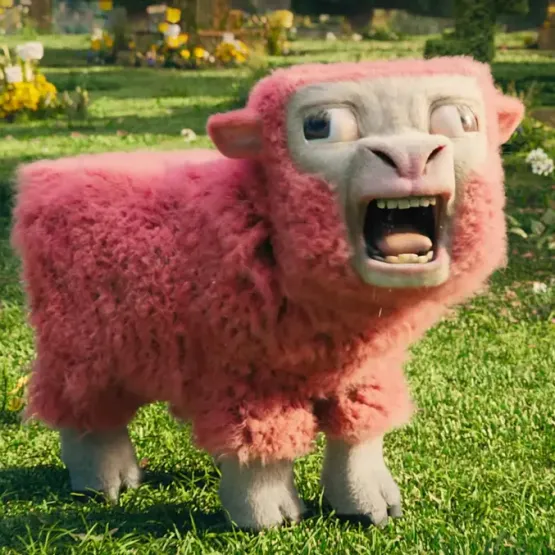

Vaca
As vacas são importantes para a produção de leite e carne.
Porco
Os porcos são criados principalmente para a produção de carne suína.
Milho
O milho é um alimento essencial na alimentação humana e animal.

Ovelha
As ovelhas são criadas para a produção de lã, carne e leite.